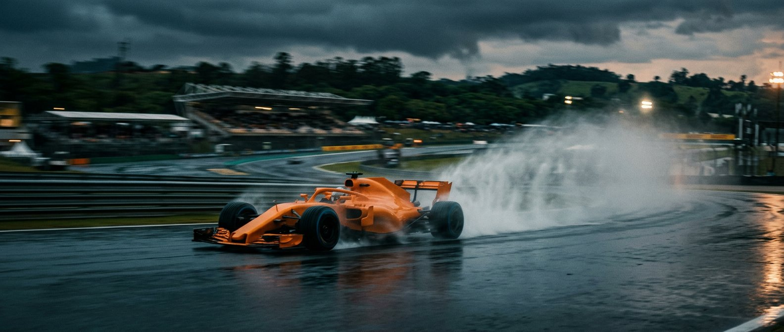
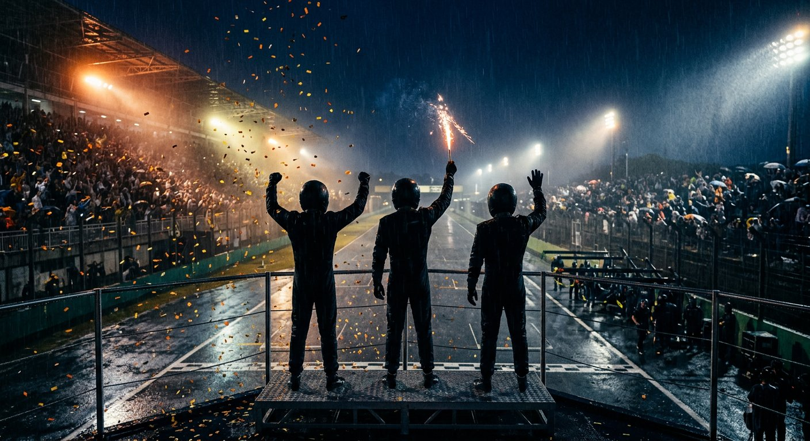

Formula 1 · 2026 Season · Race Recap
São Paulo
Grand Prix
Sun 08.11.2026
Autódromo José Carlos Pace · Brazil
RACE RECAP
71 Laps · Interlagos
2026
Formula 1
Qualifying — Sat 07.11 · Rain, red flags
The grid
reshuffled
POLE POSITION
P1
Lando
Norris
McLaren
3rd straight pole at Interlagos
— 0.204s clear of Russell in the wet
ENGINE PENALTIES HIT THE PECKING ORDER
P16
P21
Max Verstappen
Red Bull Racing
−30 places
new power unit
P12
P20
Lewis Hamilton
Ferrari
−75 places
new power unit
P2
P7
George Russell
Mercedes
−5 places
6th ice unit
P4
P13
Charles Leclerc
Ferrari
−10 places
5th ice unit
NOTE
Kimi Antonelli
— the newly crowned world champion — starts P2
Lights out — Lap 1
Norris loses
the lead
at the start
LAP 1
Lawson rockets to P2
RAIN
intensifies in the closing stages
The circuit
Interlagos
4.309
km · lap
15
turns
71
laps
São Paulo Grand Prix · Race
Rain held off — until it didn't
The recovery drive
Verstappen,
from the back
P21
P2
+0
places
gained
The penalty
A
30-place grid penalty
for a new power unit — fifth ICE, fifth turbo and fifth exhaust.
The charge
Carved through the field to
finish P2
—
14.602s behind Norris
.
Team-mate's gift
Hadjar yields
as Verstappen passes… then
holds P3
to the flag.
Red Bull — double podium
Race result
The podium
71 Laps
Interlagos · Wet
2
VERSTAPPEN
Red Bull Racing
+14.602
WINNER
1
NORRIS
McLaren
1:35:23.504
3
HADJAR
Red Bull Racing
+24.485
P4
Russell +33.991
P5
Antonelli +41.017
(PEN)
P6
Piastri +56.475
P9
Hamilton +1 LAP

Race recap · São Paulo Grand Prix 2026
Norris wins
in São Paulo
Pole to the flag,
in the rain
— a win wrestled back after losing the lead at the start
1:35:23.504
Winning time
14.602s
Margin to P2
71
Laps
FORMULA 1
São Paulo Grand Prix · Interlagos
2026